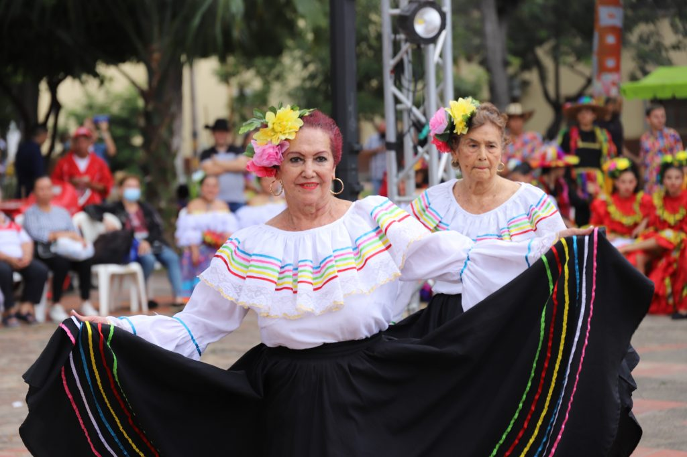
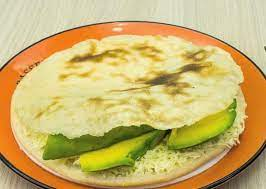
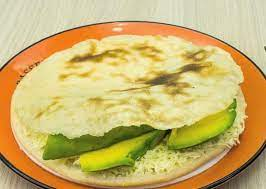
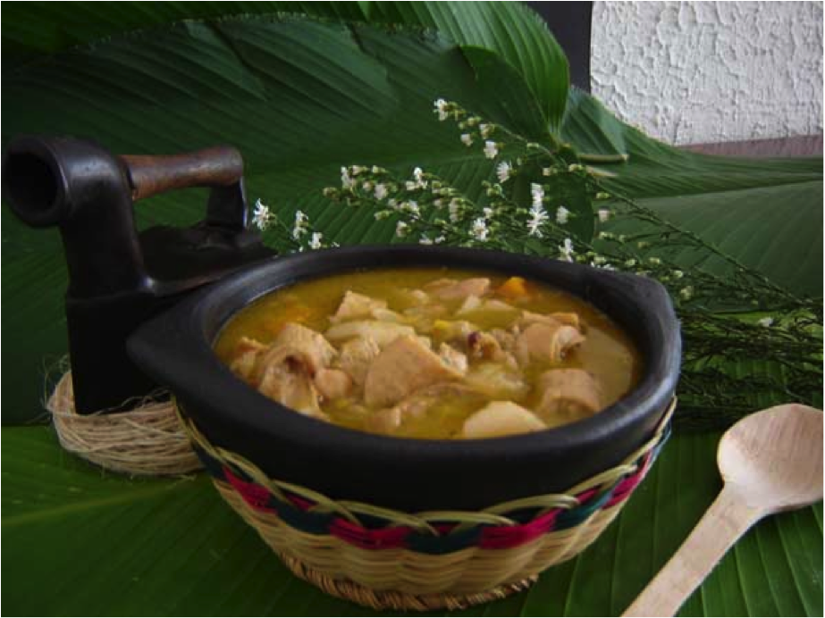
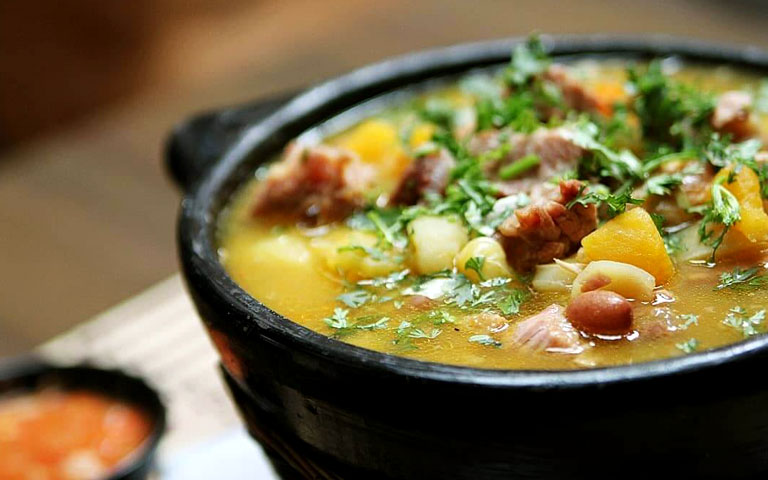
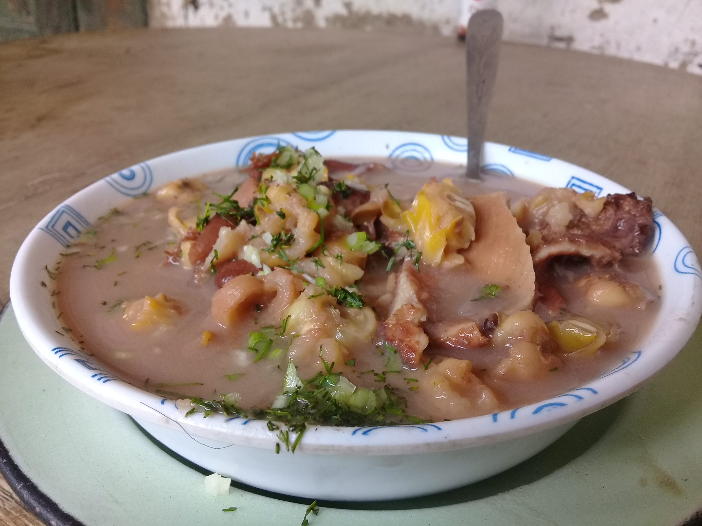
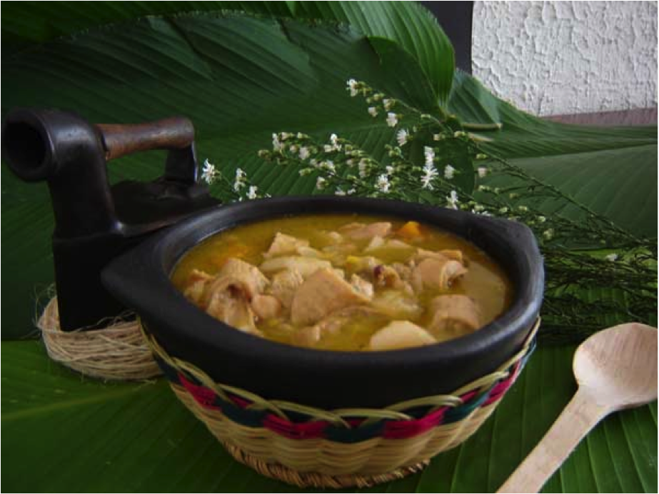
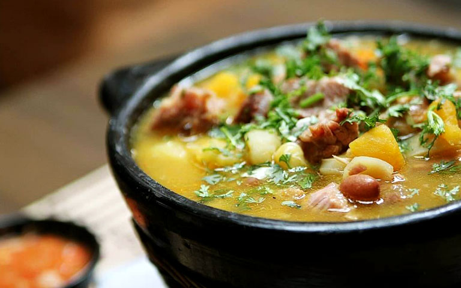
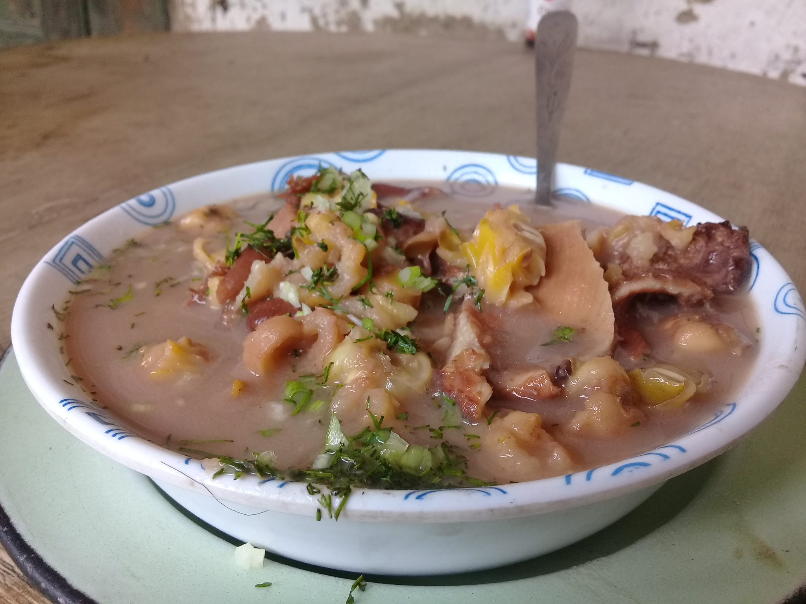

---DANZAS Y MUSICA---
En Cúcuta, la danza y la música son una parte fundamental de la cultura. La ciudad es conocida por sus festivales de música y danza, que atraen a miles de personas cada año.
Cúcuta es un crisol de ritmos y danzas que reflejan su rica herencia cultural. Entre las danzas más representativas se encuentran: Bambuco: Este baile tradicional colombiano tiene raíces indígenas y españolas. Se caracteriza por su ritmo alegre y movimientos elegantes. Joropo: Originario de los Llanos Orientales, el joropo es un baile rápido y enérgico que se acompaña con arpa, cuatro y maracas. Mapalé: De origen africano, el mapalé es una danza vibrante y enérgica que se baila al ritmo de tambores. Merengue Campesino: Este es un baile folclórico típico de la región, que se caracteriza por su ritmo alegre y pasos sencillos. La música en Cúcuta también es diversa, con géneros que van desde la música llanera hasta la cumbia y el vallenato. Las festividades locales suelen estar acompañadas de bandas de música en vivo que tocan estos ritmos tradicionales.

---ARTE Y ARQUITECTURA---
Cúcuta es conocida por su arquitectura colonial y sus obras de arte modernas. La ciudad cuenta con varios museos y galerías de arte que exhiben obras de artistas locales y nacionales.
La arquitectura de Cúcuta es un testimonio de su historia y evolución. Algunos de los edificios más emblemáticos incluyen:
---TORRE DEL RELOJ---
Construida en 1921, es uno de los símbolos más reconocibles de la ciudad. Catedral San José: Esta catedral, ubicada en el centro de la ciudad, es un ejemplo destacado de la arquitectura religiosa de la región. Antiguo Hospital San Juan de Dios: Ahora convertido en la Biblioteca Pública Julio Pérez Ferrero, este edificio es un importante centro cultural. Además, Cúcuta cuenta con varios museos y galerías de arte que exhiben tanto obras de artistas locales como de renombre nacional. El Museo Casa Natal del General Santander es un lugar destacado que celebra la vida y obra de Francisco de Paula Santander, uno de los próceres de la independencia colombiana.
---CATEDRAL SAN JOSE CUCUTA---
Historia Fundación:
La primera iglesia de San José fue construida el 9 de marzo de 1734, gracias a la gestión del párroco Domingo Antonio Mateus.
Terremoto de 1875: La catedral original fue destruida por el devastador terremoto de 1875, que causó grandes daños en la ciudad.
Sin embargo, las imágenes de Nuestra Señora de Cúcuta y de San José se mantuvieron intactas.
---RECONSTRUCCION---
La reconstrucción de la catedral comenzó poco después del terremoto y duró más de 50 años. Fue erigida como catedral y sede principal de la Diócesis de Cúcuta el 29 de mayo de 1956.
---ARQUITECTURA Y ESTILO---
La catedral presenta un estilo neoclásico, con elementos arquitectónicos que reflejan la influencia europea de la época. Ubicación: Está situada frente al Parque Santander, en el centro de Cúcuta, lo que la convierte en un punto de referencia importante para los habitantes y visitantes.
---CARACTERISTICAS---
La catedral cuenta con imponentes torres y detalles clásicos que destacan en su fachada. El interior alberga las imágenes de Nuestra Señora de Cúcuta y de San José, que son veneradas por los fieles.
Importancia Cultural y Religiosa
La Catedral de San José no solo es un lugar de culto, sino también un símbolo de la resiliencia y la fe de los cucuteños. A lo largo de los años, ha sido testigo de numerosos eventos históricos y sigue siendo un centro importante para la comunidad católica de la región.
---ACTIVIDADES SERVICIOS Y MISAS---
Se celebran misas diarias y dominicales, con horarios que permiten a los fieles participar en las ceremonias religiosas.
Eventos Especiales: La catedral también es sede de eventos religiosos importantes, como la Semana Santa y las fiestas patronales en honor a San José.
---GASTRONOMIA---
La Gastronomía de Cúcuta es conocida por sus deliciosos platos típicos, como la arepa de queso y la carne asada. La ciudad también es famosa por sus dulces y postres.
---PLATOS TIPICOS---
AREPA DE HUEVO:
Esta deliciosa arepa frita rellena de huevo es un clásico de la región.
Se prepara con masa de maíz, se fríe hasta que esté dorada y crujiente, y luego se rellena con un huevo que se cocina dentro de la arepa.
 

MUTE
Es una sopa espesa y nutritiva que combina carne de res y cerdo con maíz, garbanzos, papas, yuca y otras verduras. Es un plato muy completo y reconfortante, ideal para los días fríos.
Es una sopa espesa y nutritiva que combina carne de res y cerdo con maíz, garbanzos, papas, yuca y otras verduras. Es un plato muy completo y reconfortante, ideal para los días fríos. 





BUTIFARRA
Este embutido de carne de cerdo es muy popular en la región. Se suele servir como aperitivo o acompañamiento, y se caracteriza por su sabor especiado y su textura jugosa.
TAMALES CUCUTEÑOS
Los tamales de Cúcuta se preparan con masa de maíz rellena de cerdo, pollo, garbanzos y verduras, todo envuelto en hojas de plátano y cocido al vapor. Son un plato festivo y muy apreciado en la región.

---PRODUCTOS TIPICOS---
PANELA
Derivada de la caña de azúcar, la panela es un producto muy versátil que se utiliza en diversas preparaciones, desde bebidas hasta postres. Es conocida por su sabor dulce y su alto contenido de nutrientes.
Derivada de la caña de azúcar, la panela es un producto muy versátil que se utiliza en diversas preparaciones, desde bebidas hasta postres. Es conocida por su sabor dulce y su alto contenido de nutrientes.
CHICHA
Esta bebida fermentada tradicional se elabora a base de maíz y es muy popular en la región. Tiene un sabor ligeramente ácido y es refrescante, especialmente en los días calurosos.
---DULCES TIPICOS---
OBLEAS
Son finas láminas de masa que se rellenan con dulce de leche, mermeladas o queso. Son un postre muy popular y se pueden encontrar en muchas ferias y mercados de la ciudad.
ALFANDOQUES
Estos dulces tradicionales se elaboran con panela y se estiran hasta obtener una textura suave y masticable. Son un verdadero manjar para los amantes de los dulces.
MASATO
Otra bebida fermentada tradicional, hecha a base de arroz, maíz o piña. Tiene un sabor dulce y ligeramente alcohólico, y es muy refrescante.
CANELAZO
Una bebida caliente que se prepara con aguardiente, panela y canela. Es perfecta para las noches frías y se suele consumir durante las festividades.